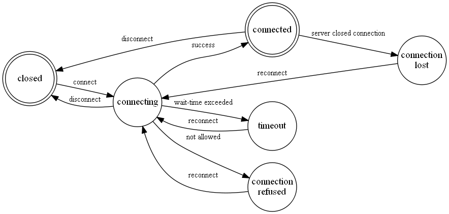

Overview and Reference
Protocol version 18
The iCUE SDK gives ability for third-party applications to control lightings on Corsair RGB devices. iCUE SDK interacts with hardware through iCUE so it should be running in order for SDK to work properly.
SDK features are supported in iCUE version 4.31 or higher.
To use this SDK you should have basic knowledge in C and library linking.
The following folders are included:
This SDK can be used on the same platforms that iCUE does:
All supported devices have one or more LED groups. An LED can only belong to one LED group. Each LED within an LED group has its own unique identifier which in this document is defined as the CorsairLedLuid type. The CorsairLedLuid value consists of a group and an LED index/id, structured as follows.
| bits 31 .. 16 | bits 15 .. 0 |
|---|---|
| LED GROUP | LED INDEX / ID |
Examples:
If a connected device only has LEDs of one color instead of all three (RGB) then when RGB color is set to such leds SDK chooses a maximum of three (RGB) values and uses it as brightness for LED.
If a connected device has some LEDs that support only on/off control (as opposed to 8bit) then if supplied brightness value is >= 128 such LED will be switched on, otherwise it will be switched off.
Side LEDs on CORSAIR STRAFE keyboards cannot be controlled by SDK. These LEDs remain controlled by iCUE regardless connected SDK clients.
Some devices have a certain number of service LED indicators (for example, WinLock or Profile LEDs on keyboards) and depending on device model iCUE may, optionally or unconditionally, prohibit controlling these LEDs by SDK. If, however, despite the prohibition on controlling the service LEDs, SDK tries to set a color for them, the new color settings will be ignored for these service LEDs without an error.
Session states are represented by CorsairSessionState enumeration. SDK client starts with CSS_Closed state. When CorsairConnect function is called, SDK sends notification that it switches to CSS_Connecting state. From CSS_Connecting it may end up with CSS_Connected (if everything is ok), CSS_Timeout (when iCUE was not found) or CSS_ConnectionRefused (if third-party control is disabled in iCUE settings). SDK performs automatic reconnects to go from failing state back to CSS_Connecting.
After transitioning to CSS_Connected state SDK will notify client application about all connected devices by sending corresponding event for each device. After transitioning to CSS_Closed or CSS_ConnectionLost state SDK will notify client application that all devices have been disconnected by sending corresponding event for each device, also for all G/M/S keys which are in a pressed state at the time one of these states occurred SDK should notify client application that these keys have been released.
iCUE will preserve communication channels with SDK clients when user locks screen, so when user session is restored and set of connected devices is unchanged the client can continue using SDK as if the session was never locked.
When user locks screen SDK will perform transition to CSS_ConnectionLost state.
When user unlocks screen SDK will perform transition to CSS_Connected state.
Both iCUE and SDK are designed to work on a local computer and will not work if accessed remotely through Microsoft RDP.
In order to be able to communicate with each other, iCUE and SDK client must run with identical access rights: either with regular access or "As Administrator"
CorsairError CorsairSetLedColors( const CorsairDeviceId deviceId, int size, const CorsairLedColor* ledColors);
Description: sets specified LEDs to some colors. The color is retained until changed by successive calls. This function does not take logical layout into account. This function executes synchronously, if you are concerned about delays consider using CorsairSetLedColorsBuffer together with CorsairSetLedColorsFlushBufferAsync.
Input arguments:
Returns: error code. CE_Success if successful. If there is no such ledId present in currently connected hardware (missing key in physical keyboard layout) then functions completes successfully and returns CE_Success.
Possible errors:
CorsairError CorsairSetLedColorsBuffer( const CorsairDeviceId deviceId, int size, const CorsairLedColor* ledColors);
Description: sets specified LEDs to some colors. This function sets LEDs colors in the buffer which is written to the devices via CorsairSetLedColorsFlushBufferAsync. Typical usecase is next: CorsairSetLedColorsFlushBufferAsync is called to write LEDs colors to the device and follows after one or more calls of CorsairSetLedColorsBuffer to set the LEDs buffer. This function does not take logical layout into account.
Input arguments:
Returns: error code. CE_Success if successful. If there is no such ledId present in currently connected hardware (missing key in physical keyboard layout) then function completes successfully and returns CE_Success.
Possible errors:
typedef void(*CorsairAsyncCallback)( void *context, CorsairError error); CorsairError CorsairSetLedColorsFlushBufferAsync( CorsairAsyncCallback callback, void *context);
Description: writes to the devices LEDs colors buffer which is previously filled by the CorsairSetLedColorsBuffer function. This function executes asynchronously and returns control to the caller immediately.
Input arguments:
Returns: error code. CE_Success if successful. If there is no such ledId present in currently connected hardware (missing key in physical keyboard layout, or trying to control mouse while it's disconnected) then function completes successfully and returns CE_Success.
Possible errors:
CorsairError CorsairGetDevices( const CorsairDeviceFilter *filter, int sizeMax, CorsairDeviceInfo *devices, int *size);
Description: populates the buffer with filtered collection of devices
Input arguments:
Returns: error code. CE_Success if successful. Also devices array will contain information about devices and size - number of devices in array on return.
Possible errors:
CorsairError CorsairGetDeviceInfo( const CorsairDeviceId deviceId, CorsairDeviceInfo *deviceInfo);
Description: gets information about device specified by deviceId
Input arguments:
Returns: error code. CE_Success if successful. Also deviceInfo will contain valid values read from the device on return.
Possible errors:
CorsairError CorsairGetDevicePropertyInfo( const CorsairDeviceId deviceId, CorsairDevicePropertyId propertyId, unsigned int index, CorsairDataType *dataType, unsigned int *flags);
Description: gets information about device property for the device specified by deviceId
Input arguments:
Returns: error code. CE_Success if successful. Also dataType and flags will contain valid values read from device on return.
Possible errors:
CorsairError CorsairReadDeviceProperty( const CorsairDeviceId deviceId, CorsairDevicePropertyId propertyId, unsigned int index, CorsairProperty *property);
Description: gets the data of device property by device identifier, property identifier and property index
Input arguments:
Returns: error code. CE_Success if successful. Also property will contain a pointer to valid property data read from device on return.
Possible errors:
CorsairError CorsairWriteDeviceProperty( const CorsairDeviceId deviceId, CorsairDevicePropertyId propertyId, unsigned int index, const CorsairProperty *property);
Description: sets the data of device property by device identifier, property identifier and property index. Can be called only with writable properties
Input arguments:
Returns: error code. CE_Success if successful.
Possible errors:
CorsairError CorsairFreeProperty(CorsairProperty *property);
Description: frees memory occupied by CorsairProperty instance
Input arguments:
Returns: error code. CE_Success if successful.
Possible errors: - CE_InvalidArguments - if property is NULL - CE_InvalidOperation - if SDK failed to free memory for some reason
CorsairError CorsairGetLedPositions( const CorsairDeviceId deviceId, int sizeMax, CorsairLedPosition *ledPositions, int *size);
Description: provides a list of supported device LEDs by its id with their positions. Position could be either physical (only device-dependent) or logical (depend on device as well as iCUE settings).
Input arguments:
Returns: error code. CE_Success if successful. Also ledPositions array will contain information about LEDs positions and size - number of items in this array on return.
Possible errors:
CorsairError CorsairGetLedLuidForKeyName( const CorsairDeviceId deviceId, char keyName, CorsairLedLuid *luid);
Description: retrieves LED luid for key name taking logical layout into account. So on AZERTY keyboards if user calls CorsairGetLedLuidForKeyName(deviceId, 'A', &luid) he gets luid with CLK_Q code. This luid can be used in CorsairSetLedColors or CorsairSetLedColorsBuffer function
Input arguments:
Returns: error code. CE_Success if successful. Also ledId will contain proper CorsairLedId on return
Possible errors:
CorsairError CorsairRequestControl( const CorsairDeviceId deviceId, CorsairAccessLevel accessLevel);
Description: requests control using specified access level. By default client has shared control over lighting and events so there is no need to call CorsairRequestControl() unless client requires exclusive control
Input arguments:
Returns: error code. CE_Success if SDK received requested control
Possible errors:
CorsairError CorsairReleaseControl(const CorsairDeviceId deviceId);
Description: releases previously requested control for specified device. This action resets access level to default (shared)
Input arguments:
Returns: error code. CE_Success if SDK released control
Possible errors:
Behavior: when this function is called iCUE should clear all colors set by previous calls to CorsairSetLedsColors*` functions if client had exclusive lighting access level and devices should show lightings that come from iCUE. Client may request exclusive control again after calling CorsairReleaseControl
CorsairError CorsairGetLedColors( const CorsairDeviceId deviceId, int size, CorsairLedColor* ledColors);
Description: get current color for the list of requested LEDs of supported device. The color should represent the actual state of the hardware LED, which could be a combination of SDK and/or iCUE input.
Input arguments:
Returns: error code. CE_Success if successful. If there is no such ledId present in currently connected hardware (missing key in physical keyboard layout, or trying to control mouse while it's disconnected) then function completes successfully and returns CE_Success. Also ledColors array will contain R, G, B and A values of colors on return
Possible errors:
CorsairError CorsairSetLayerPriority(unsigned int priority);
Description: set layer priority for this shared client. By default iCUE has priority of 127 and all shared clients have priority of 128 if they don't call this function. Layers with higher priority value are shown on top of layers with lower priority.
Input arguments:
Returns: error code. CE_Success if successful. If this function is called in exclusive mode then it will return CE_Success
Possible errors:
typedef void(*CorsairEventHandler)( void *context, const CorsairEvent *event); CorsairError CorsairSubscribeForEvents( CorsairEventHandler onEvent, void *context);
Description: registers a callback that will be called by SDK when some event happened. If client is already subscribed but calls this function again SDK should use only last callback registered for sending notifications
Input arguments:
Returns: error code. CE_Success if successful.
Possible errors:
CorsairError CorsairUnsubscribeFromEvents();
Description: unregisters callback previously registered by CorsairSubscribeForEvents call
Input arguments: no
Returns: error code. CE_Success if successful.
Possible errors:
CorsairError CorsairConfigureKeyEvent( const CorsairDeviceId deviceId, const CorsairKeyEventConfiguration *config);
Description: asks iCUE to send a key event from the device specified by deviceId to an exclusive SDK client only (if config->isIntercepted == true) or to all SDK clients including active exclusive client (if config->isIntercepted == false). Effective only for SDK clients with ExclusiveKeyEventsListening or ExclusiveLightingControlAndKeyEventsListening access level (see CorsairRequestControl). This function gives possibility for a client with ExclusiveKeyEventsListening or ExclusiveLightingControlAndKeyEventsListening access level to control selected set of macro keys only and let iCUE to pass some key events to other shared clients
Input arguments:
Returns: error code. CE_Success if configuration was successfully applied or it was not changed (but no error occurred).
Possible errors:
typedef void(*CorsairSessionStateChangedHandler)( void *context, const CorsairSessionStateChanged *eventData); CorsairError CorsairConnect( CorsairSessionStateChangedHandler onStateChanged, void *context);
Description: sets handler for session state changes, checks versions of SDK client, server and host (iCUE) to understand which of SDK functions can be used with this version of iCUE
Input arguments:
CorsairSessionStateChangedHandler onStateChanged - callback that is called by SDK when session state changed. Callback parameters:
- context - contains value that was supplied by user in CorsairConnect call.
- eventData - information about new session state and client/server versions.
Returns: error code. CE_Success if successful.
Possible errors:
CorsairError CorsairGetSessionDetails( CorsairSessionDetails* details);
Description: checks versions of SDK client, server and host (iCUE) to understand which of SDK functions can be used with this version of iCUE. If there is no active session or client is not connected to the server, then only client version will be filled
Input arguments:
Returns: error code. CE_Success if successful.
Possible errors:
CE_InvalidArguments - if details is NULL
CorsairError CorsairDisconnect();
Description: removes handler for session state changes previously set by CorsairConnect
Input arguments: no
Returns: error code. CE_Success if successful.
Possible errors:
Behavior: before function returns session state event will be triggered with state changed to CSS_Closed
enum CorsairLedGroup
Description: contains a list of led groups. Led group is used as a part of led identifier
Items:
enum CorsairLedId_Keyboard
Description: contains a list of keyboard leds that belong to CLG_Keyboard group
Item samples:
enum CorsairMacroKeyId
Description: contains a shared list of G, M and S keys (not all available keys!)
Item samples:
enum CorsairDeviceType
Description: contains list of available device types
Items:
enum CorsairChannelDeviceType
Description: contains list of the LED-devices which can be connected to the DIY-device, memory module or cooler.
Items:
enum CorsairPhysicalLayout
Description: contains list of available physical layouts for keyboards
Items:
enum CorsairLogicalLayout
Description: contains list of available logical layouts for keyboards
Items:
enum CorsairSessionState
Description: contains a list of all possible session states
Items:
enum CorsairError
Description: contains shared list of all errors which could happen during calling of Corsair* functions
Items:
enum CorsairAccessLevel
Description: contains list of available SDK access levels
Items:
enum CorsairEventId
Description: contains list of event identifiers
Items:
enum CorsairDevicePropertyId
Description: contains list of properties identifiers which can be read from device.
Items:
enum CorsairDataType
Description: contains list of available property types
Items:
enum CorsairPropertyFlag
Description: contains list of operations that can be applied to the property
Items:
struct CorsairLedColor
Description: contains information about LED and its color
Fields:
struct CorsairLedPosition
Description: contains led id and position of led.
Fields:
struct CorsairDeviceInfo
Description: contains information about device
Fields:
struct CorsairDeviceFilter
Description: contains device search filter.
Fields:
struct CorsairVersion
Description: contains information about version that consists of three components
Fields:
struct CorsairSessionDetails
Description: contains information about SDK and iCUE versions
Fields:
struct CorsairSessionStateChanged
Description: contains information about session state and client/server versions
Fields:
struct CorsairEvent
Description: contains information about event id and event data
Fields:
struct CorsairDeviceConnectionStatusChangedEvent
Description: contains information about device that was connected or disconnected
Fields:
struct CorsairKeyEvent
Description: contains information about device where G, M or S key was pressed/released and the key itself
Fields:
struct CorsairKeyEventConfiguration
Description: contains information about key event configuration
Fields:
struct CorsairDataType_BooleanArray
Description: represents an array of boolean values
Fields:
struct CorsairDataType_Int32Array
Description: represents an array of integer values
Fields:
struct CorsairDataType_Float64Array
Description: represents an array of double values
Fields:
struct CorsairDataType_StringArray
Description: represents an array of pointers to null terminated strings
Fields:
union CorsairDataValue
Description: a union of all property data types
Fields:
struct CorsairProperty
Description: contains information about device property type and value
Fields:
On-Line End User License Agreement
IMPORTANT: This End-User License Agreement ("EULA") is a legal Agreement between you and Corsair Components Inc., and any of its affiliates and/or subsidiaries ("CORSAIR") with respect to the software, SDKs and source code provided by CORSAIR, any associated media, printed materials, "online" documentation and electronic documentation (collectively referred to as "Software"). By installing, copying, or otherwise using the Software, you agree to be bound by the terms of this EULA. "You" and "Your" may refer to a natural person or to a legal entity including, but not limited to, a corporation, partnership or a limited liability company. If you do not agree to the terms of this EULA, you are not authorized to install or use the Software.
CORSAIR owns certain rights in the Software. THE SOFTWARE IS A PROPRIETARY PRODUCT OF CORSAIR OR THIRD PARTIES FROM WHOM CORSAIR HAS OBTAINED LICENSING RIGHTS. THE SOFTWARE IS PROTECTED BY COPYRIGHT LAWS AND OTHER INTELLECTUAL PROPERTY LAWS. TITLE TO THIS SOFTWARE, ANY COPY OF THIS SOFTWARE, AND ANY INTELLECTUAL PROPERTY RIGHTS IN THE SOFTWARE WILL AT ALL TIMES REMAIN WITH CORSAIR AND SUCH THIRD PARTIES. Your rights are defined by this Agreement which You agree creates a legally binding and valid contract. CORSAIR retains the right to utilize its affiliated companies, authorized distributors, authorized resellers and other third parties in pursuing any of its rights and fulfilling any of its obligations under this Agreement.
CORSAIR grants to You a nonexclusive, nontransferable (except as may be required by applicable law) royalty-free license to allow You to use the Software.
(a) Transfer of Rights. You may not transfer or assign all or any portion of the Software, or any rights granted in this Agreement, to any other person.
(b) Reverse Engineering or Modifying the Software. You will not reverse engineer, decompile, translate, disassemble, or otherwise attempt to discover the source code of the Software. The prohibition against modifying or reverse engineering the Software does not apply to the extent that You are allowed to do so by applicable law including, but not limited to, the European Union Directive on the Interoperability of Software or its implementing legislation in the member countries. You may not otherwise modify, alter, adapt, or merge the Software.
(c) Third Party Supplier. You agree that CORSAIR's third party suppliers may enforce this Agreement as it relates to their Software directly against You.
(d) Export. CORSAIR shall not be required to undertake any action pursuant to this Agreement that is prevented by any impediments arising out of national or international foreign trade or customs requirements, including embargoes or any other sanctions. This Agreement is subject to all United States government laws and regulations as may be enacted, amended or modified from time to time regarding the export from the United States of CORSAIR software, services, technology, or any derivatives thereof. You will not export or re-export any CORSAIR software, services, technology, or any derivatives thereof, or permit the shipment of same. This section will survive the expiration or termination of this Agreement for any reason.
CORSAIR reserves the right to terminate this Agreement if You fail to comply with any of the terms described herein. All license rights granted will cease upon any termination of this Agreement.
CORSAIR MAKES NO WARRANTIES OF ANY KIND, AND NO WARRANTY IS GIVEN THAT THE SOFTWARE IS ERROR-FREE OR THAT ITS USE WILL BE UNINTERRUPTED OR THAT IT WILL WORK IN CONNECTION WITH ANY OTHER SOFTWARE. ALL WARRANTIES, CONDITIONS, REPRESENTATIONS, INDEMNITIES AND GUARANTEES, WHETHER EXPRESS OR IMPLIED, ARISING BY LAW, CUSTOM, PRIOR ORAL OR WRITTEN STATEMENTS (INCLUDING, BUT NOT LIMITED TO, ANY WARRANTY OF MERCHANTABILITY OR FITNESS FOR PARTICULAR PURPOSE OR OF ERROR-FREE AND UNINTERRUPTED USE OR ANY WARRANTY AGAINST INFRINGEMENT) ARE HEREBY OVERRIDDEN, EXCLUDED AND DISCLAIMED, EXCEPT AS OTHERWISE EXPRESSLY STATED IN THIS LICENSE AGREEMENT.
CORSAIR's entire liability for all claims or damages arising out of or related to this Agreement, regardless of the form of action, whether in contract, equity, negligence, intended conduct, tort or otherwise, will be limited to and will not exceed, in the aggregate for all claims, actions and causes of action of every kind and nature; the amount paid to CORSAIR for the specific item that caused the damage or that is the subject matter of the cause of action. In no event will the measure of damages payable by CORSAIR include, nor will CORSAIR be liable for, any amounts for loss of income, profit or savings or indirect, incidental, consequential, exemplary, punitive or special damages of any party, including third parties, even if CORSAIR has been advised of the possibility of such damages in advance, and all such damages are expressly disclaimed. This section shall not be interpreted to exclude any liability that is prohibited from being excluded by applicable law. Except as otherwise provided by applicable law, no claim, regardless of form, arising out of or in connection with this Agreement may be brought by You unless such claim is brought either (i) within two years after the cause of action has accrued or (ii) within the shortest period of time after the cause of action has accrued that may be legally contracted for in the applicable jurisdiction if a two year limitation would be legally unenforceable.
CORSAIR offers technical support services. See www.corsair.com. Such technical support shall be provided in CORSAIR's sole discretion without any guarantee or warranty of any kind. It is your responsibility to back up of all your existing data, software and programs before receiving any technical support from CORSAIR. CORSAIR reserves the right to refuse, suspend or terminate any technical support, in its sole discretion.
This Agreement will be governed by and construed in accordance with the substantive laws of the State of California in the United States, without giving effect to any choice-of-law rules that may require the application of the laws of another jurisdiction. This Agreement will not be governed by the United Nations Convention on Contracts for the International Sale of Goods, the application of which is expressly excluded. Any disputes arising under this Agreement shall be settled exclusively in the California state courts or United States federal courts located in California. The parties hereby submit to the personal jurisdiction of such courts for the purpose of resolving any dispute under this Agreement.
If any provision of this Agreement is found to be void or unenforceable, it will not affect the validity of any other provision of this Agreement and those provisions will remain valid and enforceable according to their terms. To the extent that an unenforceable provision may be reformed to be enforceable by a court of law, such provision will be deemed to be so reformed in this Agreement.
All rights not specifically granted in this Agreement are reserved by CORSAIR.
You acknowledge that You have read this Agreement, understand it and agree to be bound by its terms and conditions. You further agree that it is the complete and exclusive statement of the agreement between us which supersedes any proposal or prior agreement, oral or written, and any other communications between us relating to the subject matter of this Agreement.